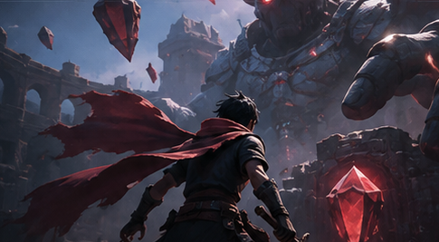
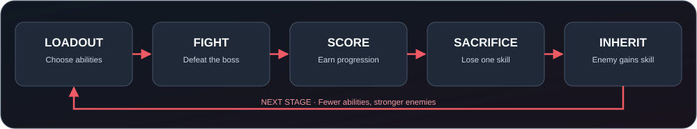

● PRE-PRODUCTIONUNITYSINGLE-PLAYER FIRST4-PERSON TEAM

CONCEPT ART / 콘셉트 이미지 — NOT ACTUAL GAMEPLAY / 실제 게임 화면이 아닙니다.
게임 소개
K4RMA는 플레이어가 보스를 이길 때마다 자신의 능력 하나를 희생하고, 그 능력이 이후의 적에게 넘어가는 싱글플레이 우선 액션·보스 전투 게임입니다. 스테이지가 진행될수록 내 선택지가 줄어들고 적의 공격 패턴이 변화합니다. 남은 기술, 기본 공격, 회피 및 성장 요소를 활용해 마지막까지 살아남는 것이 핵심입니다.
핵심 질문:다음 적이 사용할 기술을 알고도, 어떤 능력을 포기할 것인가?
핵심 게임 루프

시작: 기본 스탯(HP·공격력·이동 속도·공격 속도)과 여러 특수 능력을 가진 캐릭터로 시작합니다. Dash, Fireball, Shield, Heal은 예시이며 최종 구성은 미정입니다.
전투: 기본 공격과 남은 능력으로 적/보스와 싸웁니다. 적은 이동·추적·공격 등의 기본 AI를 사용하며, 이후 단계에서는 희생된 능력도 사용할 수 있습니다.
평가: 처치 수, 클리어 시간, 남은 HP, 피격 횟수 등의 플레이 결과를 점수에 반영하는 방안을 검토합니다. 점수를 기본 스탯 성장에 사용하는 방식도 논의 중입니다.
희생: 스테이지 클리어 후 보유 능력 중 하나를 선택해 포기합니다. 플레이어는 그 능력을 잃고, 능력은 이후 적이 사용할 수 있는 풀에 추가됩니다.
반복: 다음 전투에서는 이전 선택의 결과를 마주합니다. 마지막 단계까지의 난이도와 승리 가능성은 플레이 테스트로 조정합니다.
기획 범위와 결정 상태
구분
현재 방향
핵심 차별점
확정된 방향: 능력 희생 → 이후 적/보스가 해당 능력을 활용
게임 방식
싱글플레이를 먼저 완성하는 조작 중심 전투
엔진
Unity. 구현 언어는 Unity용 C#을 예상
시점·그래픽
3인칭 3D 가능성을 먼저 조사하고, 범위·성능·제작 난도가 맞지 않으면 2D로 전환
콘텐츠 수량
시작 능력 수, 전체 능력 종류, 보스/스테이지 수 미정
추가 메커니즘
능력 조합 시너지·점수 기반 스탯 강화 검토 중
멀티플레이
현재 개발 범위 밖. 시간이 남을 경우를 위해 확장 여지만 고려
첫 번째 플레이 가능한 버전
우선 캐릭터 1명 → 전투 공간 1개 → 기본 공격과 소수의 능력 → 보스 1종 → 클리어 후 능력 희생 → 다음 전투에서 적이 그 능력 사용까지 구현해 핵심 재미를 검증합니다. 멀티플레이, 많은 스테이지, 고급 모델링과 복잡한 물리 효과는 이 단계의 필수 조건이 아닙니다.
개발 원칙
간단하게 시작하되 확장을 막지 않기. 멀티플레이 코드를 미리 만들자는 뜻이 아닙니다. 플레이어·능력·적·점수·UI를 한 곳에 뒤섞지 않고, 나중에 플레이어가 추가되어도 가능한 한 재사용할 수 있게 설계합니다.
역할별 동일한 원칙. 코드는 입력과 캐릭터/전투 동작을 분리하고, UI는 플레이어 수나 상태 표시가 늘어날 수 있게 구성하며, 모델·애니메이션은 특정 캐릭터 하나에만 고정하지 않고 재사용성을 고려합니다. 미래 기능 때문에 현재 MVP를 불필요하게 복잡하게 만들지는 않습니다.
AI는 공통 맥락을 보고 사용. AI에 작업을 맡기기 전 docs/PROJECT_CONTEXT.md, 현재 코드, Unity 버전, 본인 작업 범위 및 관련 인터페이스를 함께 전달합니다. 질문할 때는 원하는 동작·현재 구조·시도한 방법·오류 내용·제약 조건을 구체적으로 설명합니다. 생성된 코드는 직접 이해하고 실행·검증합니다.
작고 검증 가능한 단위로 개발. 핵심 동작을 먼저 확인한 뒤 기능을 추가합니다. 변경 사항은 기록하고 서로 다른 파트를 일찍 통합합니다.
협업 및 저장소
GitHub: 공동 코드 저장소 및 변경 이력 관리. Aziz가 저장소/협업 설정과 통합을 담당합니다. 역할별 개발 담당자는 추후 확정합니다.
Unity Version Control (구 Plastic SCM): 대용량 바이너리 에셋·잠금이 필요한 경우를 포함해 적용 방식을 검토합니다. Git과 Unity Version Control을 동시에 별도 정본으로 운영하지 않습니다. 정본 저장소와 에셋 관리 방식은 팀이 합의해 문서화합니다.
Notion: 기획안, 회의록, 작업 분담, 개발 일정과 결정 사항 공유를 위한 예정 공간입니다.
Unity 프로젝트가 아직 이 저장소에 올라오지 않았거나 에디터 버전이 합의되지 않았다면 실행 가능한 빌드는 없습니다. Unity 버전·대상 플랫폼·프로젝트 경로가 정해지면 여기에 실제 설치/실행 절차를 추가합니다. 임의의 Unity 버전 또는 미확인 실행 명령을 사용하지 마세요.
로드맵
단계
목표
상태
기획·검증
규칙 정리, 2D/3D 가능성 확인, 역할 분담
진행 중
핵심 프로토타입
희생 → 적 능력 승계 루프 검증
예정
플레이 가능한 MVP
입력·전투·적 AI·UI·스테이지 전환 통합
예정
콘텐츠·밸런스
능력/보스 확장, 점수·성장·시너지 여부 확정
예정
테스트·발표
버그 수정, 플레이 테스트, 시연/문서 정리
예정
팀 및 사용 안내
SW설계기초 · 4인 팀 프로젝트. 팀원 네 명의 한국 이름이 모두 ㄱ/K로 시작하고, 4는 네 명을 의미합니다. 프로젝트 제목 K4RMA는 팀의 최종 확인 전까지 가제입니다.
팀 외부에 공유할 때는 내부 기획·코드·에셋을 팀의 동의 없이 공개하지 않습니다. 제3자 에셋을 사용할 경우 출처와 라이선스를 별도로 기록합니다. 저장소 전체의 공개 라이선스는 아직 결정되지 않았습니다.
Overview
K4RMA is a single-player-first action / boss-combat game in which each victory forces the player to sacrifice one ability. That ability becomes available to future enemies. As the player loses options, opponents inherit the consequences of earlier choices. Survive by combining the remaining skills, basic attacks, movement, and progression.
The central question:Which ability will you surrender, knowing a later enemy can use it against you?
Core game loop
Begin: Start with baseline stats (HP, attack, movement speed, attack speed) and multiple special abilities. Dash, Fireball, Shield, and Heal are examples, not a final skill list.
Fight: Use basic attacks and remaining abilities. Enemies use basic movement/tracking/attack AI; later enemies may use previously surrendered skills.
Score: The team is considering kills, clear time, remaining HP, and hits taken as performance inputs. Spending score on baseline stat growth is also under discussion.
Sacrifice: After a clear, surrender one owned ability. It disappears from the player and enters the pool of abilities available to subsequent enemies.
Repeat: Face the consequences of earlier choices. Endgame difficulty and beatability will be balanced through playtesting.
Scope and decision status
Area
Current direction
Signature mechanic
Agreed direction: sacrifice a skill → later enemy/boss may use it
Game mode
Complete single-player combat first
Engine
Unity; Unity C# is the expected implementation language
Presentation
Investigate third-person 3D feasibility first; fall back to 2D if scope, performance, or skills require it
Content counts
Starting loadout, total abilities, stages, and boss count not decided
Secondary systems
Skill synergies and score-driven base-stat upgrades under consideration
Multiplayer
Out of current scope; preserve reasonable extension points only
First playable slice
Validate the actual hook with one player → one arena → basic attack and a few skills → one boss → surrender a skill → fight an enemy that can use it. Multiplayer, numerous stages, custom high-end models, and advanced physics are not prerequisites for this prototype.
Engineering principles
Keep it simple without closing off future options. “Multiplayer-ready” does not mean building networking now. Avoid tying all players, abilities, enemies, scores, and UI to one global game object; keep responsibilities explicit and reusable.
Apply this beyond code. Keep player input separate from combat behaviors; design UI so extra player/state displays can be added; prefer reusable character models and animations over assets inseparable from one hard-coded player. Do not overengineer today's MVP for hypothetical features.
Give AI the whole relevant context. Before using AI, include docs/PROJECT_CONTEXT.md, the actual files, agreed Unity version, task boundaries, and related interfaces. Ask technical questions with the desired behavior, current architecture, attempted steps, exact errors, and constraints. Understand, run, and verify generated work before merging it.
Build in small, testable increments. Prove the essential loop, add features progressively, record decisions, and integrate early.
Collaboration and version control
GitHub: Shared source repository and change history. Aziz owns repository/collaboration setup and integration; implementation roles remain to be assigned.
Unity Version Control (formerly Plastic SCM): Evaluate where asset locking/large binaries require it. Do not run Git and Unity Version Control as two competing sources of truth. Agree on and document the authoritative repository and asset workflow first.
Notion: Planned shared workspace for design, meeting notes, assignments, schedule, and decisions.
There is no verified runnable build yet if the Unity project or selected editor version has not been committed. Once the team selects a version, target platform, and project location, replace this section with tested setup/run instructions. Do not assume an unverified Unity version or invent a run command.
SW Basic Design · four-person university team. All four members' Korean names begin with ㄱ/K, and 4 represents the four members. K4RMA is a working title pending team approval. Do not share private plans, code, or assets externally without team consent. Record attribution and license terms for third-party assets. A license for the repository as a whole has not yet been selected.